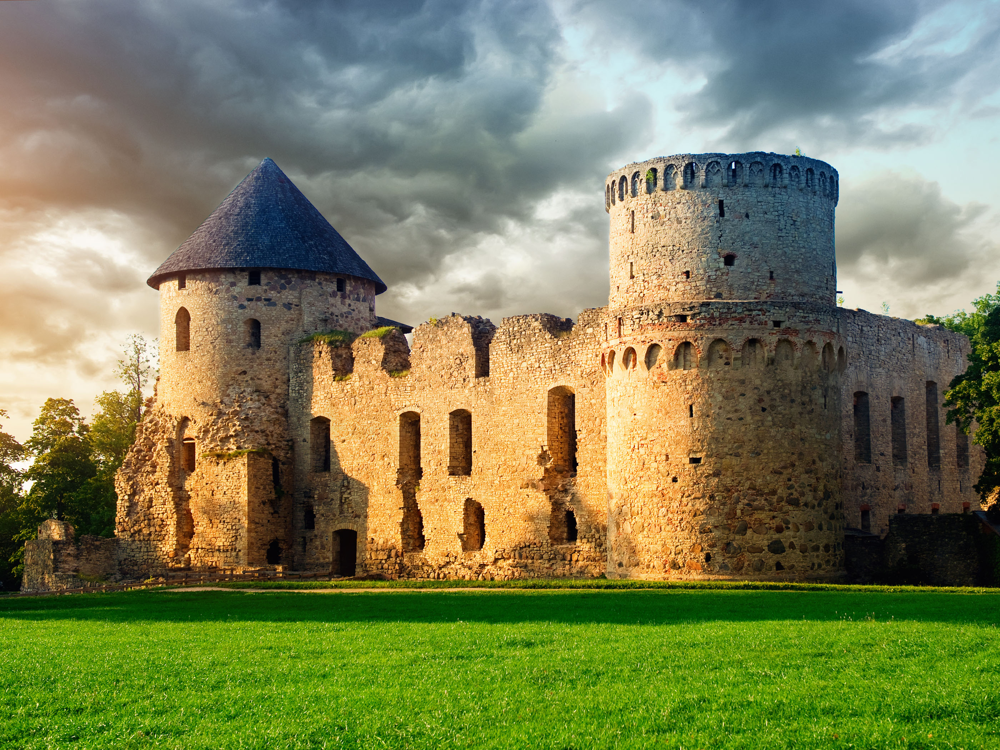

Cēsu viduslaiku pils
Cēsu pilsdrupas ir iespaidīgs vēstures
liecinieks, kas pilsētas viesus saista ar savu viduslaiku arhitektūras romantisko pievilcību.
Cēsu pilsētas pirmsākumi meklējami 800 gadu tālā pagātnē. Tie saistīti ar Cēsu viduslaiku pili, ap kuru 13. gadsimtā veidojās pilsēta. Pils cauri gadsimtiem ir dalījusi savu likteni ar Cēsu pilsētu cīņās pret krievu, poļu un zviedru karapulkiem.

Vidusslaiku pilī:
- uzkāpiet tornī sveču lukturīšu gaismā un apskatiet naksnīgo Cēsu vecpilsētu, pilsdrupas un pils parku no augšas;
- dodieties kādā no pils piedāvātajām ekskursijām vai teatralizētajām programmām;
- ļaujieties ģimenes piedzīvojumam, veicot aizraujošus uzdevumus "Aktivitāšu mugursomās".
Darba laiki:
Biļešu tirdzniecība tiek pārtraukta 45 min. pirms darba laika beigām.
- P: slēgts
- O: slēgts
- T: 10.00 - 18.00
- C: 10.00 - 18.00
- P: 10.00 - 18.00
- S: 10.00 - 18.00
- Sv: 10.00 - 18.00
Ieejas maksa:
- 3,00 EUR – pieaugušajiem
- 1,50 EUR – skolēniem, studentiem, pensionāriem (uzrādot apliecību)
- 6,00 EUR – ģimenēm (2 pieaugušie ar bērniem līdz 16 gadu vecumam)